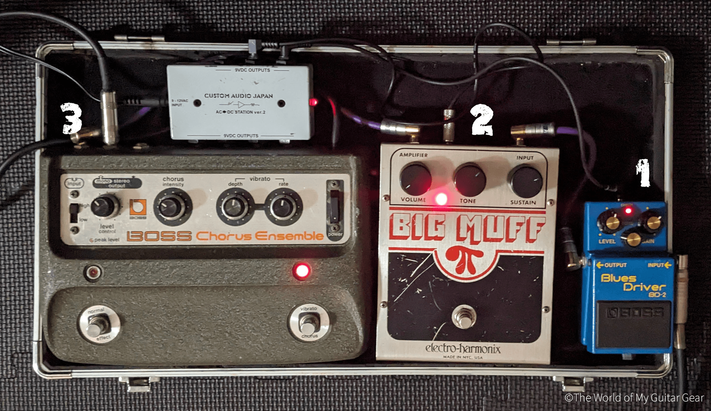
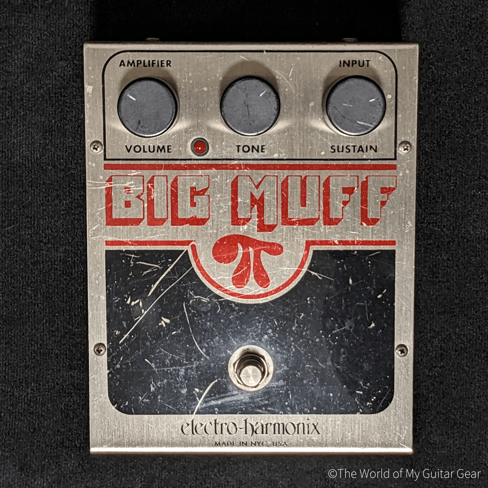

このページでは、「もしエフェクター・ペダルボードを3台で組むなら？」をテーマに、
僕のお気に入りのエフェクターを3台紹介したいと思います。ではさっそく見ていきましょう。


楽器店でバイトをしていた時に、バイト仲間に改造してもらった（彼は今、会社を立ち上げて独自のエフェクターを作っている）。
通常のBlues Driverよりも中音域が少しリフトアップされて、バンドサウンドの中でも埋もれにくくなった。
コードを弾いても音の輪郭がぼやけにくいので、曲のサビなどで音圧を出して盛り上げたいときに重宝する。

こちらもBD-2同様、改造してもらった。通常のBig Muffよりも少しざらつきが出るようになり、荒々しいサウンドになった。Dinosaur Jr.のJ. Mascisのサウンドに代表されるようなRam’s head期のBig Muffに少し近づいたような気もしている。
ギターソロで一発ぶちかましたいときに踏む。下手でも間違えてもその圧倒的な音圧の勢いだけですべてが吹き飛ぶ。

クリーントーンのアルペジオに最適で、独特な音の揺れを作り出し幻想的なサウンドを演出してくれる。
CE-1はつなぐだけで音が丸くなる。これは音質の劣化によるものだが、それが逆に余分な高音域を削ってくれ、あたたかみのあるサウンドになる。
この特徴のおかげで、シングルコイルのギターでも、高音域が出すぎて耳が痛くなるようなことを防げる。